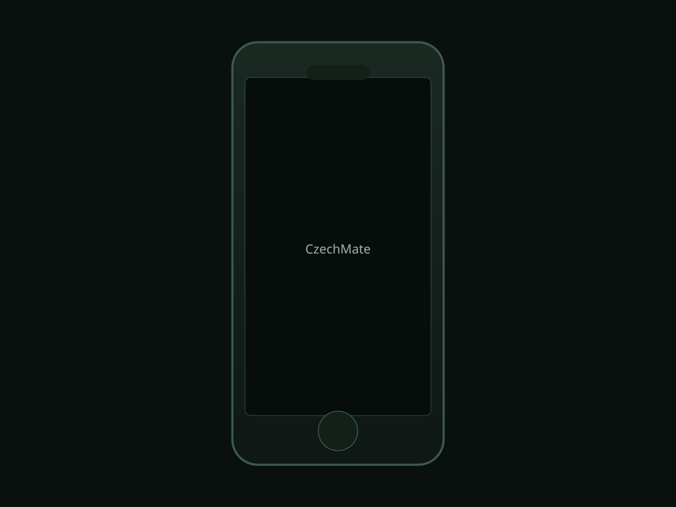

01
Fyzická přesnost
8×8 matice a logika tahů respektují reálnou pozici figurek na desce.
Open source · ESP32‑C6 · Flutter
CzechMate spojuje fyzickou šachovnici s detekcí tahů, 73 LED a výkonným firmware s aplikací pro telefon i počítač. Propojení přes Bluetooth nebo síť — partie, nastavení i OTA aktualizace na dosah.
Produkt
Od Reed matice po FreeRTOS úlohy a webové API na čipu — CzechMate je navržený jako celistvá platforma pro hru i vývojáře.
8×8 matice a logika tahů respektují reálnou pozici figurek na desce.
Návody na tahy, šach, mat i animace — přímo na polích a tlačítkách.
Bluetooth Low Energy pro mobil; Wi‑Fi a webový server pro prohlížeč i API.
LED a hardware
WS2812B pásek, multiplexovaná matice a ESP32‑C6 drží synchron mezi hardwarem a herní logikou v jedné desce.

Firmware multiplexuje GPIO, obsluhuje tlačítka a streamuje stav hry. Nahraj sem Blender render (WebP) noční desky, detail LED pole nebo exploded view — viz návod v komentáři v hlavičce stránky.
Aplikace
Partie, připojení k desce, firmware update a další funkce v jedné aplikaci — sdílená codebase pro Android a desktop.

Riverpod stav, BLE a HTTP/WebSocket pro komunikaci s deskou. Obrázek vpravo je zástupný — vlož export telefonu nebo Mac okna z Blenderu (WebP).
Co uvnitř
Přímé spojení s deskou přes GATT — pairing z aplikace CzechMate.
Snapshoty stavu a streamy kompatibilní s webovým rozhraním na ESP32.
Pravidla včetně rošády, en passant a promoce běží na čipu v game_task.
Hraj z prohlížeče, když je deska v síti — stejná logika jako na LED.
Firmware z HTTPS nebo přes Bluetooth stream — manifest na GitHubu.
Celý firmware i Flutter klient jsou ve veřejném repozitáři na GitHubu.
Stažení
Nejnovější sestavení z CI najdeš na GitHub Releases. Na Androidu povol instalaci z neznámého zdroje; na Macu (Apple Silicon) otevři DMG a přetáhni aplikaci.
Soubory mají tvar czechmate-*-android.apk a czechmate-*-macos.dmg.
TestFlight / App Store po nastavení vývojářského účtu.
Již brzyInstalačka z CI je v plánu.
Již brzyProjekt vzniká komunitně; hardware a firmware doplňuje Flutter klient a dokumentace v repozitáři. Chceš přispět nebo si postavit vlastní desku? Začni na GitHubu.
Otevřít GitHub